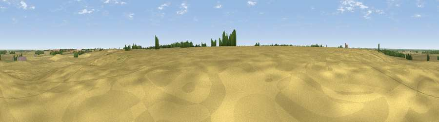

Viewpoint near Wennington
#42717 in England · top 24% of its area beats it · near WenningtonThe view, rendered

A 360° render of this exact spot computed from the terrain model, tree cover and land cover — summer colours, afternoon light, calibrated against photographs of famous viewpoints. Real trees, hedges and buildings will differ in detail.
The panorama
Grey silhouette: terrain skyline in each direction (720 bearings, Earth curvature and refraction included). Dashed green: skyline with trees (+15 m) and buildings (+8 m) as obstacles. Blue strip: how far the ground is visible on each bearing.
Where the view opens
Wedge length = distance to the farthest visible ground on that bearing (vegetation-aware). Rings at 10, 25 and 50 km.
What fills the view
89% cropland · 7% grassland · 3% woodland ·
Angular shares of the visible panorama (visual magnitude), not map area. Landscape diversity 0.19 (0–1 Shannon).
Key numbers
More beautiful places nearby
The staircase of upgrades: each row has a higher view potential than everything closer. Driving times are estimates from straight-line distance, calibrated against real road routing — check an actual route before setting out.
| Place | Direction | Drive | Score |
|---|---|---|---|
| Viewpoint near Woodwalton | WNW · 0 km | ~2 min | 29.3 |
| Viewpoint near Sawtry | WNW · 7 km | ~14 min | 38.0 |
| Viewpoint near Chesterton | NW · 17 km | ~30 min | 43.0 |
| Viewpoint near Duddington | NW · 29 km | ~46 min | 43.8 |
| Hill summit | S · 32 km | ~49 min | 47.4 |
| Viewpoint near Finedon | WSW · 33 km | ~50 min | 47.5 |
| Viewpoint near Harlton | SSE · 33 km | ~51 min | 49.6 |
| Viewpoint near Stapleford | SE · 38 km | ~57 min | 54.8 |
52.40880, -0.19192 · source: osm viewpoint · position refined by local search. Computed location — check access rights before visiting.